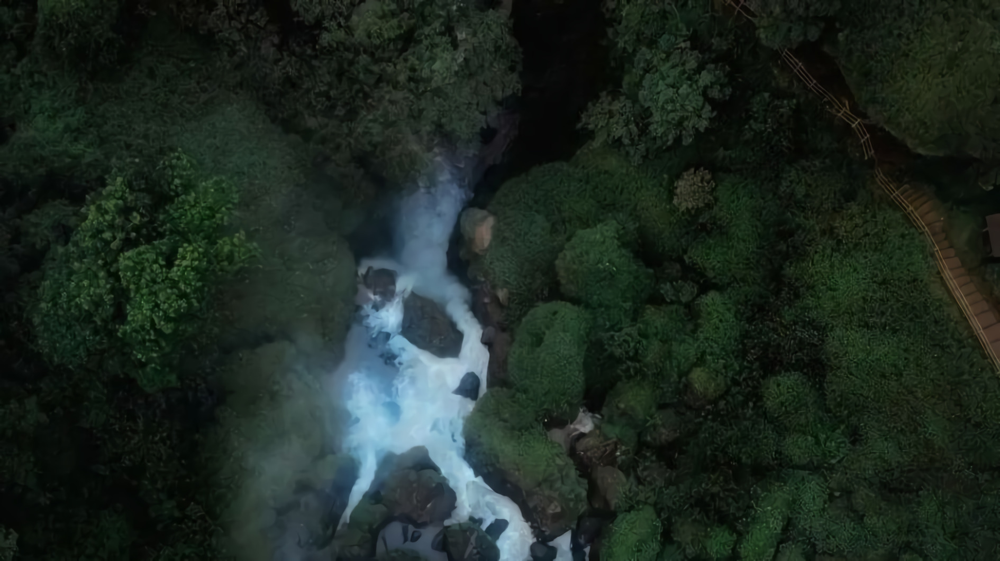

Curug Sewu
Wisata alam untuk menikmati air terjun ternyata tidak selalu berkaitan dengan perjalanan yang penuh rintangan dan tantangan. Objek wisata Curug Sewu yang terletak di Kendal, Jawa Tengah, justru merupakan destinasi yang bisa dinikmati bersama keluarga. Anak-anak hingga orang tua bisa melihat langsung keindahan air terjun tertinggi di Jawa Tengah ini dan memanfaatkan fasilitas hiburan yang tersedia, seperti kolam renang dan taman bermain. Semua itu bisa dinikmati dengan harga yang sangat terjangkau.
Harga Tiket Masuk
| Hari | Harga | Jam Operasional |
|---|---|---|
| Senin - Jum'at | Rp.17.200 | 09.00 - 15.00 WIB |
| Sabtu - Minggu | Rp.20.000 | 09.00 - 15.00 WIB |
Daya Tarik Curug Sewu

Curug Sewu adalah salah satu objek wisata andalan Kendal yang berada di Desa Wisata Curugsewu. Air terjunnya memiliki ketinggian total mencapai 80 meter dengan bentuk berundak-undak. Fakta ini menjadikan Curug Sewu sebagai air terjun tertinggi di Jawa Tengah. Selain menikmati keindahan panorama alam yang melingkupi air terjunnya, pengunjung memiliki banyak opsi untuk berwisata di kawasan ini. Tidak heran jika di sini populer sebagai destinasi wisata alam bagi keluarga.
Kawasan wisata Curug Sewu berada di ketinggian 650 Mdpl dengan dikelilingi hutan. Hal ini menjadikan udara di sekitarnya terasa sejuk dan menyegarkan. Perjalanan menuju objek wisata ini pun tidak terasa melelahkan meski harus menempuh jalur pegunungan yang berkelok-kelok. Kondisi jalannya mulus dan berhias jajaran hutan pinus hingga perkebunan yang akan menyegarkan mata.
Objek wisata air terjun ini sendiri berada di tengah kawasan hutan wisata yang di bawah pengelolaan Perhutani Kendal. Setelah melewati gerbang masuk, pengunjung dapat langsung menuju gardu pandang untuk menikmati panorama air terjun dari ketinggian. Sejak memasuki gerbang, pengunjung akan langsung menangkap suara derasnya arus air yang mengalir di kejauhan. Pengunjung bisa melihat panorama air terjun dari gardu pandang Munthuk Jambe. Dari sini, akan terlihat jelas bentuk air terjun yang bertingkat-tingkat. Tingkat tertinggi memiliki ketinggian 40 meter, tingkat kedua sekitar 15 meter, dan tingkat ketiga 20 meter. Setelah puas menikmati pemandangan hamparan hutan serta air terjun dari atas, pengunjung bisa melihat air terjun dari dekat. Pengunjung cukup menuruni tebing memasuki kawasan hutan. Karena arus airnya yang sangat deras, wisatawan tidak diperbolehkan untuk berada terlalu dekat dengan Curug Sewu.
Spot Foto Curug Sewu

Keistimewaan kawasan wisata Curug Sewu lainnya adalah tersedia berbagai spot foto menarik. Spot yang paling mencolok tentu saja gardu pandang Munthuk Jambe. Munthuk Jambe adalah area bibir tebing yang telah tertata dengan pagar pengaman berwarna-warni. Dari sini, pengunjung bisa berfoto dengan latar pemandangan hutan dan air terjun yang memukau dari ketinggian. Di dekat Munthuk Jambe juga terdapat spot lainnya yang tak kalah unik. Spot ini berbentuk tangan raksasa berwarna merah yang terbuat dari besi. Pengunjung bisa menangkap keindahan pemandangan alam di sini.
Satu lagi yang tidak boleh terlewatkan adalah monumen Vespa raksasa yang menyambut wisatawan di gerbang masuk. Replika vespa dengan tinggi sekitar 2 meter ini sudah ada sejak tahun 2008. Keberadaan Vespa raksasa ini menjadi pengingat gelaran acara Jambore Nasional Vespa yang pernah berlangsung di sini. Sekarang, monumen ini jadi salah satu ciri khas Curug Sewu dan spot foto unik favorit pengunjung.
Fasilitas Dan Arena Bermain

Curug Sewu adalah kawasan wisata yang cocok untuk menjadi destinasi liburan keluarga. Selain mengenalkan keindahan alam pada anak-anak, pengunjung juga bisa menikmati fasilitas taman bermain yang ada. Taman bermain ini memiliki berbagai wahana permainan mulai dari ayunan hingga kereta mini. Setelah bermain, tidak ada salahnya menyegarkan diri. Anak-anak bisa menjajal fasilitas kolam renang yang tersedia. Berenang di kawasan pegunungan dengan pemandangan alam tentu akan jadi pengalaman yang tak terlupakan. Sebelumnya air terjun ini juga pernah memiliki kebun binatang mini. Namun, kebun binatang ini sudah tidak lagi beroperasi. Banyaknya hewan yang tidak terurus menjadi salah satu alasan tutupnya kebun binatang ini.
Selain panorama alam dan fasilitas hiburan untuk anak-anak, di sini juga dilengkapi dengan fasilitas lainnya. Panggung hiburan dan gedung pertemuan adalah beberapa di antaranya. Tersedia juga lapangan tenis serta penginapan. Sebagai area hutan, terdapat beberapa kera yang dibiarkan berkeliaran di kawasan objek wisata ini. Pengunjung boleh memberi makan kera-kera tersebut asalkan tidak secara sembarangan. Jika tidak diganggu, kera-kera tersebut tidak akan mengganggu. Namun, pengunjung tetap perlu berhati-hati dan waspada dengan menjaga barang bawaannya.
Curug Sewu terus mengalami peningkatan dalam penyediaan fasilitas yang memadai. Fasilitas tersebut terdiri dari area parkir yang luas, mushola, toilet, kamar mandi, dan beragam warung makan. Fasilitas hiburan yang tersedia antara lain kolam renang, lapangan tenis, gedung pertemuan, penginapan, panggung hiburan, gardu pandang, dan taman bermain anak dengan aneka wahana permainan. Kebun binatang mini yang dulu sempat ada kini telah ditutup karena kurangnya perawatan.
Galery Pengunjung


Lokasi Curug Sewu
Objek wisata air terjun ini terletak di Desa Wisata Curugsewu, Kecamatan Patean, Kabupaten Kendal, Jawa Tengah. Lokasinya berjarak sekitar 40 kilometer di selatan Kota Kendal. Lokasinya bisa dijangkau menggunaan kendaraan pribadi maupun transportasi umum dengan akses jalan yang sudah beraspal mulus. Dari Kendal, terdapat dua jalur yang bisa dipilih yaitu jalur barat dengan rute Weleri – Sukorejo. Sementara dari timur, rutenya adalah Boja – Patean.